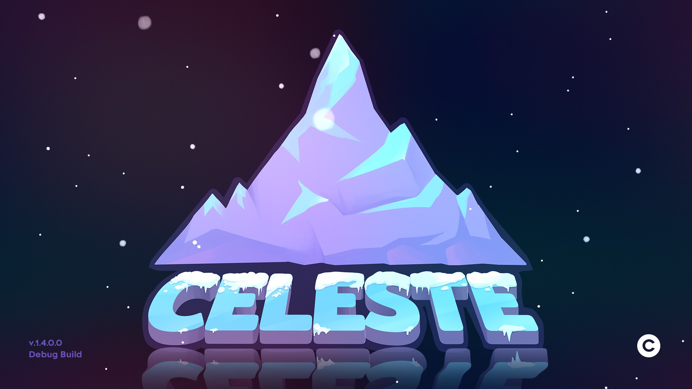
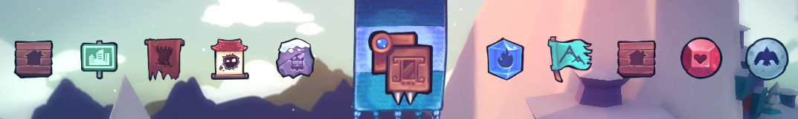

 Celeste est un jeu developpe par EXOK Games et Maddy Makes Games Inc. qui nous plonge dans l'univers de Celeste et de la personnage Madeline, qui tente de gravir la montagne celeste a travers toute une histoire magnifique, l'histoire debute via un sentier abandonne depuis longtemps et ou Madeline rencontre une grand mere pour dire qu'elle n'est pas prete a gravir le Mont Celeste, cependant, l'heroine que l'on va controller, va cependant continuer son ascention a travers plusieurs chapitre, on croisera durant l'aventure plusieurs personnage assez differents les uns que les autres ainsi que son autre soi-meme que l'on croisera apres le premier chapitre, ainsi que dans les chapitres 6 et 7 et le 9e chapitre. Ce jeu etait intentionnellement fait pour etre speedrunner, un mode assiste est disponible si le jeu deviens plus galere pour certaines personnes, on peut y retrouver beaucoup de technique dans le jeu qui sont retrouvable dans la page Technique. Ayant eu tellement de succes, les createurs deciderent de faire un DLC qui se prenomme farewell et puis fini d'etre inclus dans le jeu de base, le farewell ayant fait ce niveau, c'est l'un des plus dur niveau en vanilla, en modee j'en parlerais meme pas. Car oui, le jeu peut-etre modee via un chargeur de mods qui porte le nom d'une montagne, Everest, et on peut retrouver encore plus de technique les plus improblables les une que les autres.
